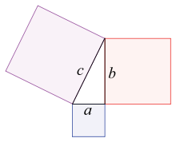

Тигърът (Panthera tigris) е бозайник от семейство Котки (Felidae). Между големите котки успели да доживеят наши дни, тигрите са несъмнено най-големи. В диво състояние сибирският подвид достига 320 кг, според някои източници. Достига до

В недалечното минало е разпространен практически в цяла Азия, но в наши дни ареалът му на разпространение е силно редуциран. В момента са оцелели само 8 подвида популации. Преди това е имало 17 вида от тигри, но след време броят им е намалял.
Мечките (Ursidae) са семейство едри хищни бозайници. Тялото им е масивно, късо и високопоставено, с голяма глава, малки очи и малки, закръглени уши, къса опашка и са стъпалоходещи с по пет пръста и дълги, извити, неприбиращи се нокти. Козината им е гъ ста и рунтава, на цвят от светлокафява до черна или бяла. Имат силно развито обоняние и слух, но слабо зрение.
Корабът е голям плавателен съд, който се използва за различни дейности, като например транспорт на хора и стоки, риболов, забавления, обществена безопасност и военни действия.
Планета (на гръцки: πλανήτης — странник, пътешественик) е тяло с маса, достатъчна, за да приеме кръгла форма под действието на силата на гравитацията, което обикаля около звезда, съставено е от скали, и/или газ, лед, и не произвежда енергия чрез термоядрени реакции. До 1990 г. са известни само девет планети (всичките от нашата Слънчева система). Към 27 август 2010 г. са известни вече 490, като всички новооткрити планети са екзопланети (тоест планети, намиращи се извън Слънчевата система).
Смята се, че планетите се формират при сгъстяване на облака от газ, от който една звездна система се е зародила във формата на диск, преди в ядрото на протозвездата да започнат да протичат термоядрени реакции. Впоследствие, протопланетарният диск бива разпръснат под въздействието на слънчевия вятър на младата звезда.
Питагоровата теорема е една от най-важните теореми в евклидовата геометрия, изразяваща връзката между дължините на страните на правоъгълен триъгълник:[1]
a2 + b2 = c2 